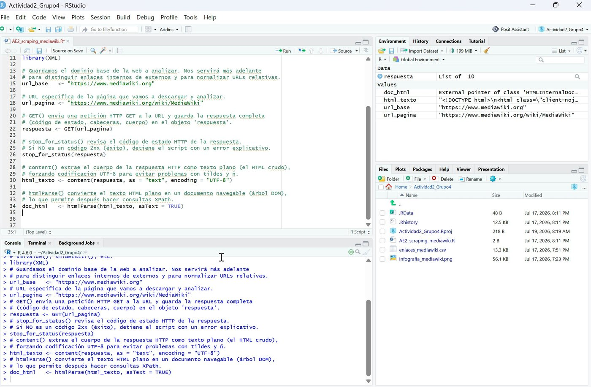
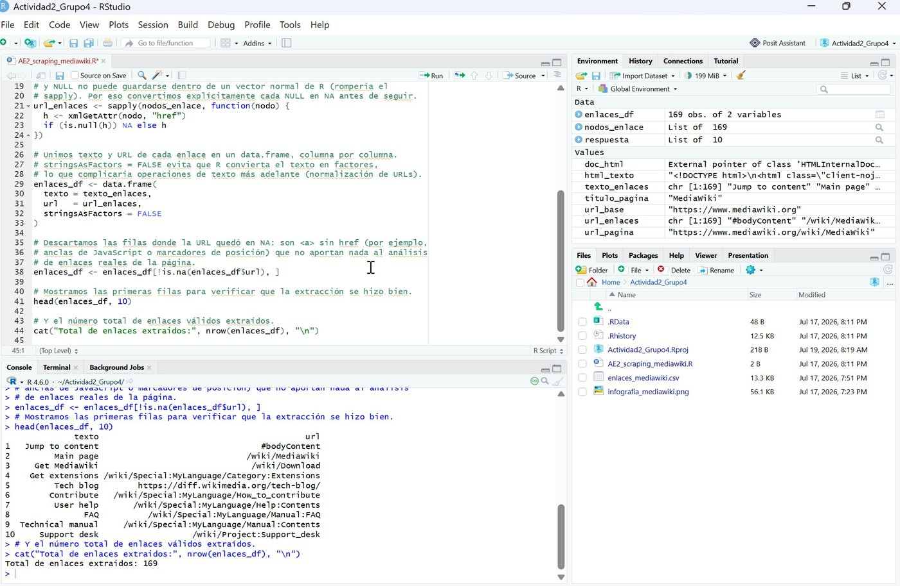
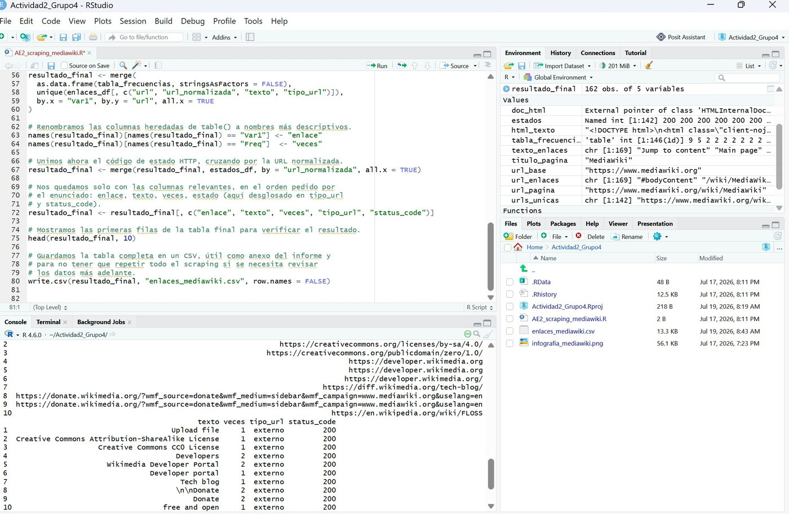
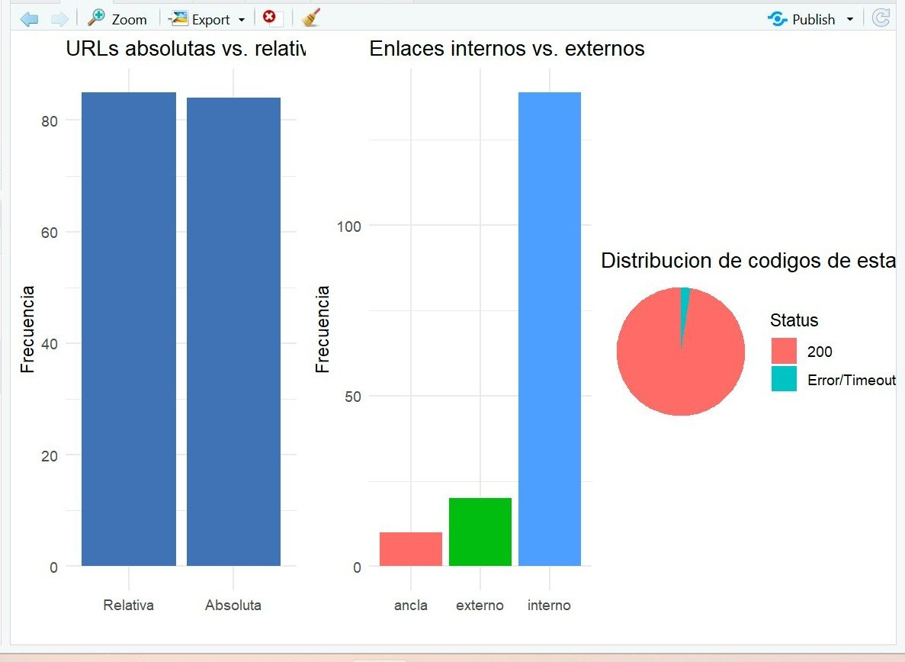

El punto de partida
Por qué hacer esto con un programa y no a mano
Imaginemos revisar, en una página con casi 170 enlaces, si cada uno de ellos todavía lleva a algún sitio o si ya está roto —uno por uno, a mano. Es tedioso, lento y propenso a errores. Este ejercicio construyó un pequeño programa que hace exactamente eso de forma automática, en minutos, usando como ejemplo la página de documentación pública de MediaWiki (el software detrás de Wikipedia) —elegida simplemente por ser un caso manejable y realista, no por tratarse de un sitio propio.
La misma técnica, aplicada al sitio web de una empresa, es la base de las herramientas que avisan automáticamente cuando algo se rompe en la propia página, sin depender de que un cliente lo reporte primero.

Paso 1
Catalogar cada enlace de la página, uno por uno
Una vez que el programa podía "leer" la estructura de la página, recorrió cada enlace que encontró y anotó dos cosas de cada uno: el texto visible para quien visita la página (por ejemplo, "Ayuda") y la dirección real a la que apunta. Repetido en toda la página, esto produjo un catálogo de 169 enlaces, junto con cuántas veces se repite cada uno —útil para detectar, por ejemplo, que un enlace del menú aparece tanto al principio como al final de cada página.

Para qué sirve esto en una empresa
Con esta misma técnica, una empresa puede mantener un inventario siempre actualizado de todos los enlaces internos y externos de su propio sitio web, en lugar de depender de que alguien lo revise a mano cada vez que se publica un cambio.
Paso 2
Comprobar, uno por uno, si cada enlace todavía funciona
Tener la dirección de un enlace no es lo mismo que saber si todavía lleva a algún sitio. El programa visitó, uno por uno, los 139 enlaces únicos encontrados y preguntó a cada uno, en la práctica, "¿sigues ahí?" —anotando la respuesta. De los enlaces consultados, el 96,9% respondió con normalidad; el resto no respondió a tiempo.

Para qué sirve esto en una empresa
Esto es, en esencia, un "verificador de enlaces rotos" —el tipo de herramienta que evita que el sitio web de una empresa se vaya llenando de enlaces muertos sin que nadie se dé cuenta, algo que perjudica tanto la experiencia del visitante como la posición del sitio en los buscadores.
Paso 3
Convertir cientos de filas de datos en tres gráficos que se entienden de un vistazo
Toda esa información en bruto —cientos de filas de texto, direcciones y códigos de respuesta— es difícil de leer como tabla. El último paso la convirtió en tres imágenes sencillas, una junto a otra: cuántos enlaces estaban escritos como dirección completa frente a los que usaban un atajo, cuántos se quedaban dentro del propio sitio frente a los que apuntaban hacia fuera, y qué proporción de todos ellos realmente funcionaba.

Para qué sirve esto en una empresa
Convertir datos en bruto en un puñado de gráficos claros es lo que separa "tenemos una hoja de cálculo que nadie lee" de "tenemos un panel que alguien revisa cada semana".
En resumen
Por qué importa esto más allá del ejercicio académico
La página analizada aquí es pública y se usó únicamente como ejemplo manejable y realista —el ejercicio no tenía relación con ninguna empresa real. Pero la técnica escala directamente al sitio web de cualquier organización: revisar automáticamente, de forma periódica y sin intervención manual, cientos o miles de enlaces propios, y generar de paso los gráficos que resumen ese estado. Es el mismo principio detrás de las herramientas de monitorización que avisan a una empresa en el momento en que algo se rompe en su propio sitio, en lugar de enterarse por un cliente frustrado.
169 enlaces catalogados · 96,9% respondiendo correctamente · 3 gráficos generados automáticamente